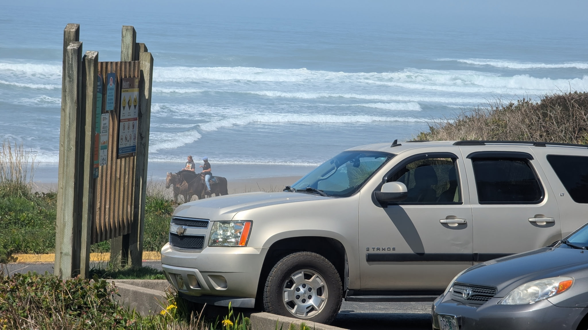
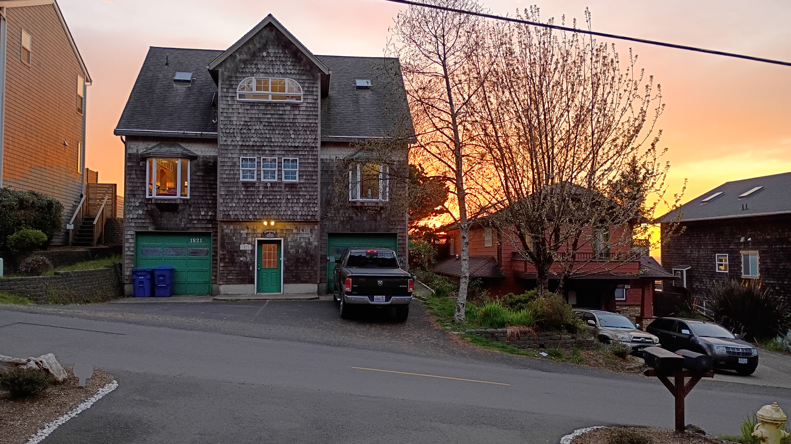
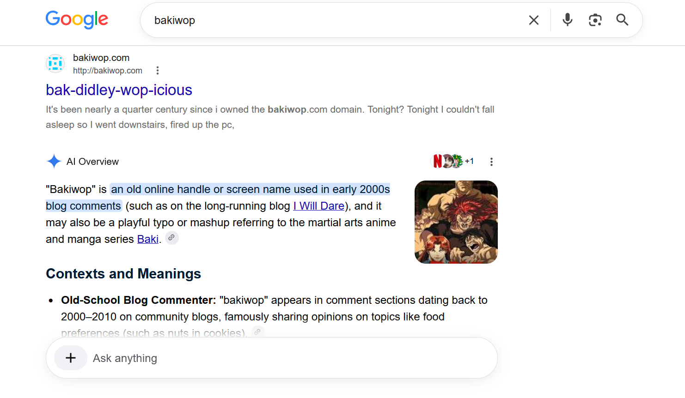
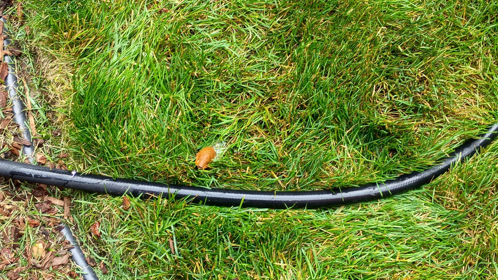
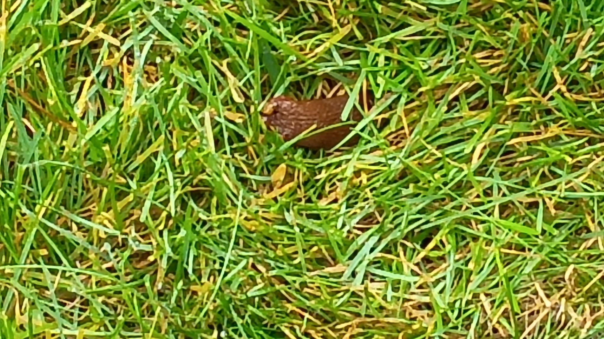
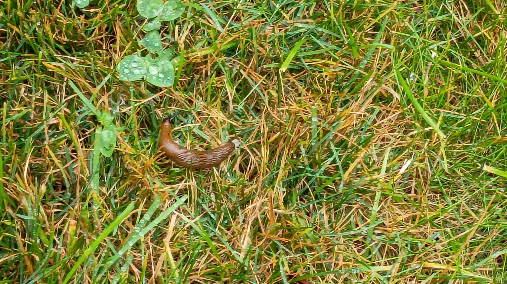
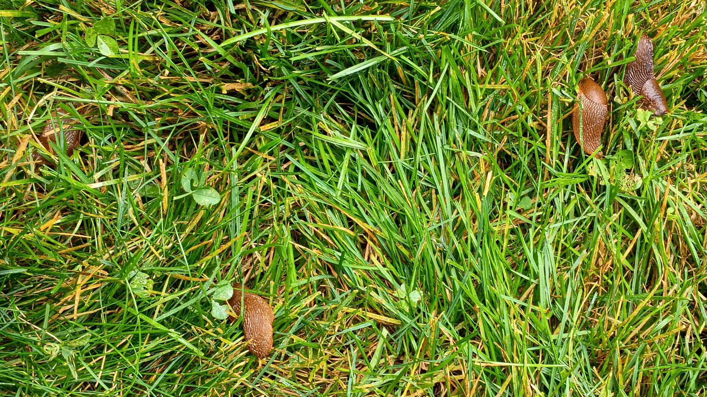

01 August 2026
Yachats, OR

02 August 2026

Lincoln City, OR
03 August 2026

Lincoln City, OR
10 August 2026
Got back to work after my little mishap.
First day back. Library doors open. Patrons come in. Out of the corner of my eye I see one of those patrons coming toward me.
Not just one of those patrons . . . perhaps the king of those kinds of patrons. The patron who doesn't listen no matter what you say or how you say it. The patron who is able-bodied and has a home with running water yet manages to smell like stale butt, mold, body odor, and . . . and something else . . . but I simply can't make myself concentrate on the smell enough to identify it. The mind simply won't allow it.
I surreptitiously watch them slowly make their way toward me.
Inexorably. Inevitably. Inescapably.
My first patron on my first day back.
When they get close enough I look up and smile.
Part of the service, yo.
They are carrying a bag. A big Ziploc bag.
They upturn the bag and unload it onto my desk.
"You've helped me before," they say, sitting down. "Can you make these work?"
I look down to see a charger, a bunch of plugs, and two of the oldest, rustiest, nastiest looking electric razors I've seen (including my time at various all boys boarding schools) in over five decades of life.
Full of beard clippings.
Which have spilled onto my desk.
"I'm mostly a tech guy-," I begin.
"I lost the plug for this one," they say, grabbing one then putting it down. "And I lost the top for this one," they say grabbing the other one, "though this might be it?"
They're pointing at a piece of, I assume, metal, though it is so rusty over crusty that I see no actual metal. I believe, would they were to ever try to use it to shave, that the piece of offended skin would skip right over the tetanus and gangrene infections and immediately fall off.
I do this thing sometimes, when talking to patrons. I put my hands in my sleeves . . . kind of a subliminal way of letting them know - after I've, of course, told them directly, with actual words - that they're the ones that have to do the driving on their device.
In this case I put my hands in my sleeves because I'm hoping the thrift shop cardigan I'm wearing has some magical bacterial properties.
I'll have to check the back of the label later.
The patron grabs one of the razors - the one without the top - and grabs one of the plugs, and then tries plugging the plug into the top of the razor where the blade would be.
"I'm not sure that's where the plug should go." I say.
"Where else would it go?" They ask.
"It looks like there's hole in the bottom it might plug into."
I've now gotten two complete sentences in. The patron must really be worried about the razors.
They keep trying to plug the plug into the top of the razor.
"Well," I reply, "I'm not familiar with electric razors. Perhaps you should-."
They continue trying to plug the plug into the top then say, "I lost the top for this one," they put the plug down but hold onto the razor tightly, "and lost the plug for this one," they finish, picking up the second razor.
Their fingers are white from gripping them so hard.
They turn them both on while saying, "But they both still have a charge."
More beard clippings on the desk.
I keep my hands inside my sleeves.
"I'm afraid I can't help you with the razors," I say, kind of tapering off at the end because I'm not used to being able to get so many full sentences in during conversations with them.
"What would you do?" They ask.
Take them to the dump, I fail to say. Gift them to an enemy, I also fail to say. Bury them deep in the earth to ne'er be found again, I continue to fail to say.
"I'd call the customer service number for the razor and ask for help."
I know. I know. It sounds like a bit of a cop-out, but while we don't do electric razor support at your local library it is our job to try to find authoritative sources of help for most any problem a patron might have.
"I can never understand them," they grumble.
"Your other option is to take them back to where you bought them."
"Can I take them to Bi-Mart?" They ask, a keen, far off look of hope and desire in their eyes.
"Is that where you purchased th,-"
'They might help me," they say, starting to pack up the Ziplock bag with plugs, razors, and assorted parts.
"Have a good one. Good luck . . ." I say as they get up and head toward the exit.
" . . . to the store associate," I completely fail to add as I grab for the sanitizing wipes I keep in a nearby desk drawer.
11 August 2026
I'm a pretty lazy guy. Sometimes, when I'm trying to go to my website, I'll just type in bakiwop without the .com and hit enter. I figure I'll just click on the first result (not a lot of bakiwops out there) and call it good.
Well.
This time I used Google, which I normally don't use, and the AI mode popped up, which I usually turn off, and this is what it displayed:

Seems I'm identified as an old school blog commenter from back in the aughts . . . and . . . AND . . . I famously (?!) shared strong opinions on topics like nuts in cookies.
They are referring to, I believe, a post Jodi, of I Will Dare fame, made agreeing with a post I had made on my website.
Now Jodi was, and still is, a way more accomplished and prominent writer and blogger than I am. And rightfully so! But I love that I am more known for a comment on another blog than for doing my own blog.
I was going to screenshot my other bakiwop-related ai interactions for a laugh, but then . . . remember, I'm lazy . . . I discovered I could simply copy and paste the interactions into a text file.
Some highlights:
- "tilde era origins" sounds dope
- i comment too much on i will dare
- "bak-didley-wop-icious milestones"
- i've been "meticulously archiving their corner of the internet since the web's foundational days"
- google ai states "The bakiwop name serves as a living history of personal web hosting across three distinct eras" and then goes on to list four distinct eras
- "most notably?" "famously?" phrases not usually used to describe me
- don't think i've ever used the term "bloatware web"
- i'm part of the "'I Will Dare' Inner Circle"
- google ai keeps linking here as proof of many things . . . none of which are mentioned there
- i do believe the response to prompt #5 was nearly completed hallucinated
- I have no idea what's up with the references for prompt #6 . . . i think the ai was getting sick of talking about me
In its entirety:
Prompt #2
prompt: tell me everything associated with the bakiwop name
The name bakiwop is tied almost exclusively to an individual's personal digital footprint spanning over three decades of internet history.
## 🌐 The Core Entity: The Blog & Domain Name
The absolute primary association with the name is the personal website and personal archive located at bakiwop.com [1]
* The "Tilde" Era Origins: The owner of the name originally hosted their thoughts on a mid-1990s university server space—a classic .edu tilde (~) site common during the early days of the World Wide Web. [1]
* The First Domain: bakiwop.com was purchased shortly after as the owner's very first custom domain name. [1]
* The Domain Reunion: After letting the domain go for a long stretch of time, the original creator unexpectedly found it available on a registrar shelf and re-purchased it, moving their digital presence back to the address. [2]
* The "baki.cc" Alternate: During the years bakiwop.com was inactive, the owner used the shorter alternative domain baki.cc to host their blog logs. [1]
## 💬 Community Context & Persona
Across the web, "bakiwop" is the online handle used by this specific blogger.
* Twin Cities Culture Scene: The name is highly associated with the long-running culture, literature, and music blog I Will Dare, where bakiwop has been a staple presence in the comment sections, interacting with community members about books, music, and local internet culture for decades.
* Writing Style: On the personal blog archives, the handle is associated with reflective, casual entries about daily life, tech nostalgia, and self-described "bak-didley-wop-icious" milestones. [1]
## 🔍 Language Notes (What it is NOT)
Because the name is a unique, fabricated handle, it is occasionally confused with phonetically similar terms:
* Not "Baywop": It is entirely unrelated to the localized [Newfoundland slang term "baywop"](https://dchp.arts.ubc.ca/entries/baywop), which is a regional pejorative used in eastern Canada.
* Not "Baki": While the shorter version of the site is baki.cc, the name has no relation to the famous martial arts anime and manga franchise, Baki the Grappler. [1, 3, 4, 5, 6]
Would you like to explore specific blog archives from this domain, or are you trying to trace this handle across a particular social media platform?
[1] https://bakiwop.com
[2] https://bakiwop.com
[3] https://baki.fandom.com
[4] https://en.wiktionary.org
[5] https://dchp.arts.ubc.ca
[6] https://en.wikipedia.org
Prompt #3
prompt: tell me more about bakiwop
To understand bakiwop completely, you have to look at the timeline of an individual who has been meticulously archiving their corner of the internet since the web's foundational days. [1]
## 🗺️ The Digital Footprint & Timeline
The bakiwop name serves as a living history of personal web hosting across three distinct eras:
1. The Mid-1990s (.edu Era): The moniker first appeared as a student username hosted on a university server. This was during the internet's early "tilde era," where personal sites looked like university.edu/~bakiwop. [1]
2. The Turn of the Millennium (bakiwop.com Pt. 1): Around 2000, the user purchased their first independent custom domain name, bakiwop.com. Shortly after, the owner allowed the registration to lapse, and the domain remained adrift for decades. [1]
3. The Pivot to baki.cc: While their original domain was lost, the creator continued blogging under a shorter, alternative web domain called baki.cc, which housed years of personal stories, logs, and essays. [1]
4. The 2026 Domain Reunion: In May 2026, during a bout of late-night insomnia, the owner randomly checked domain availability and discovered bakiwop.com sitting unclaimed on a registrar shelf. They instantly bought it back, initiating a major project to digitize and migrate old archives. [1, 2]
## 💻 Web Design & Accessibility Ethics
With the modern revival of the bakiwop site, the individual behind the handle has heavily focused on learning modern web fundamentals. The blog currently documents a self-taught journey into semantic HTML and the W3C's Web Content Accessibility Guidelines (WCAG). The author writes transparently about trying to master core elements like structural tags (<main>, <header>, <footer>) and aria-labels to ensure the site is highly accessible. [1]
## 🍪 Core Beliefs & Quirks
Because the bakiwop persona is built on decades of casual blogging and forum discussions, certain hyper-specific personal stances have become part of the handle's identity within their community. Most notably, bakiwop is an outspoken, humorous crusader against putting nuts in baked goods, famously prompting a minor community rally on the Twin Cities I Will Dare blog declaring that "nuts are sheer evil" and absolutely "do not belong in cookies or fudge." [3]
Are you trying to track down a specific story or archive from the old baki.cc era, or are you hoping to connect with the owner of the handle?
[1] https://bakiwop.com
[2] https://bakiwop.com
[3] https://iwilldare.com
Prompt #4
prompt: tell me even more about bakiwop
Because the internet handle bakiwop belongs to a fiercely private indie-web purist who avoids centralized social networks, nearly everything else known about the name relates to the specific philosophy, technical setup, and distinct personality found on the bakiwop.com blog.
A deeper look into the lore, technology, and community presence associated with the name reveals several key pillars:
## 🛠️ The Technical Stack & "Small Web" Philosophy
Unlike modern influencers, the person behind bakiwop actively fights against what they call the "bloatware web."
* Hand-Coded Minimalism: The user documents an ongoing mission to write their blog strictly using raw, minimalist code. They avoid modern platforms like WordPress or heavy JavaScript frameworks.
* The WCAG Obsession: A massive portion of recent bakiwop logs details a hyper-fixation on the Web Content Accessibility Guidelines. The author documents the tedious but rewarding process of ensuring screen-readers can seamlessly parse their decades of archives, championing semantic structures over flashy layouts.
* Domain Identity Crisis: The author openly admits a slight aesthetic preference for the layout of their temporary domain, baki.cc, noting it felt more "hip" and "with it." However, the sheer history of bakiwop.com—being their original domain from roughly the year 2000—ultimately won them over for their permanent home. [1, 2]
## 🏛️ The Twin Cities Indie Connection
The name is deeply respected within a specific, tight-knit cluster of Minnesota-centric web culture.
* The "I Will Dare" Inner Circle: While bakiwop's own site is an archive, they are most socially active in the comment ecosystem of the Twin Cities culture and literary log I Will Dare. Over more than 20 years, the handle has become recognized for providing long-form, thoughtful commentary on literature, local happenings, and independent music.
* Anti-Algorithm Stance: The handle is heavily associated with the "Small Web" or "IndieWeb" movement—a group of internet users who believe people should own their content via personal websites rather than giving it away to corporate social media companies.
## 🦖 Internet Linguistics & False Positives
Because it is a highly distinct, non-dictionary word, searching for "bakiwop" across the broader web often pulls up completely unrelated things that confuse automated systems:
* The "Baki Cat CC" Coincidence: Because the author used the domain baki.cc, automated web scrapers occasionally cross-reference the name with mobile gaming. Specifically, the game Battle Cats ran a major crossover event featuring Li'l Baki CC and Baki Cat CC, which are completely unrelated cartoon fighting cats.
* The Slang Confusion: The name occasionally trips up linguistic filters searching for regional Canadian slang, though the handle's owner has verified the name was just a nonsensical phrase they coined in the 90s. [1, 3, 4]
Are you looking for a specific entry from their mid-90s university tilde era, or are you trying to trace a particular conversation they had on the Twin Cities blogs?
[1] https://bakiwop.com
[2] https://bakiwop.com
[3] https://battlecats.miraheze.org
[4] https://battle-cats.fandom.com
Prompt #5
prompt: list entries from the mid-90s university tilde era
While bakiwop's recent blogging logs explicitly mention having "school tilde server space back in the mid-90s" on a .edu server, a specific, itemized list of individual entries from that era does not exist in the public web archives. [1]
According to bakiwop's own digital migration notes on bakiwop.com, those earliest mid-1990s thoughts remain part of an offline historical archive. The creator is currently hand-coding the revival of the site, meaning that while the existence of that 90s server space is confirmed, the specific titles or contents of those individual student logs have not yet been fully digitized or published for public viewing. [1]
The earliest publicly readable archives currently detailing the bakiwop digital timeline begin when the author transitioned to the independent bakiwop.com domain around the year 2000, followed by the long-running logs later kept at baki.cc. [1]
If you are looking for a specific topic they wrote about during their early college days, or if you want to track down their more recent 2026 migration logs, let me know!
[1] https://bakiwop.com
Prompt #6
prompt: what did bakiwop write about during their early college days
Because bakiwop is a real-world, private individual whose early 1990s student blog exists only as an offline personal archive, the exact text, specific topics, or diary entries from their early college days have never been published to the open web.
However, looking at the context clues from their later 2000s archives and interactions on the Twin Cities culture blog I Will Dare, we can piece together the structural nature of what that early era looked like:
## 🎒 The Mid-90s "Tilde Era" Style
* Classic Student Life Musings: On the modern bakiwop site, the author references their original .edu server space (e.g., university.edu/~bakiwop) as a classic "web log." During the mid-90s, these university-hosted spaces were typically used by students to write about adjusting to campus life, technological frustrations, and early internet culture.
* The Indie-Web Transition: These early college entries laid the foundation for the author's lifelong commitment to the "Small Web." The logs from this era were less about curated content and more about a young user discovering raw HTML and experimenting with coding.
## 📚 Broader Interests and Community Clues
While the exact 1990s student posts are offline, bakiwop's multi-decade comment history on I Will Dare highlights the enduring topics they have championed since youth:
* The Literary & Pop Culture Critic: Long-time forum members know bakiwop as an avid reader. In community threads discussing formative years—such as a notable debate about the funniest books ever written—bakiwop and fellow users frequently swapped notes on what they read (or managed to skip) during high school and college, highlighting a deep, lifelong passion for literature and sharp-witted commentary.
* The Baking Purist: Even in casual web settings, bakiwop’s infamous, long-running stance against putting "evil" nuts in baked goods (like cookies and fudge) is a running gag that tracks back through years of digital interactions.
Until the author completes their ongoing project to digitize and migrate those 30-year-old student server archives back onto bakiwop.com, the precise college entries remain a private historical file.
Would you like to explore how bakiwop's current 2026 technical projects connect back to this 90s era, or look closer at their history with the Twin Cities indie scene?
Prompt #7
prompt: did bakiwop use any social media
No, bakiwop does not use mainstream social media platforms and has actively avoided networks like Facebook, Instagram, X (Twitter), or Reddit. [1, 2]
The user behind the handle operates strictly within the philosophy of the "Small Web" or "IndieWeb" movement. This means they intentionally reject algorithmic corporate networks in favor of completely owning their data through independent web hosting. [3, 4, 5] The only exceptions or social footprints associated with the name are hyper-specific web anomalies:
*The Indie Blog Ecosystem: Instead of social media profiles, bakiwop fulfills their online interactions through long-form comment sections on trusted indie sites, specifically the Twin Cities culture blog I Will Dare.
* The Automated Web Mentions: The handle appeared historically on foreign web development forums like the UK's Grayblog in 2000, where other programmers were discussing bakiwop's unique personal server architecture rather than a social profile.
* The Dormant 2025 Scratchpad: They briefly opened a bakiwop Blogspot page in early 2025, but it was used solely to test layouts and was quickly abandoned so the creator could hand-code their main site on bakiwop.com.
On their official domain, bakiwop explicitly stands against modern social trackers, meaning you cannot find a profile for them on any modern app. If you want to connect with bakiwop, they instruct readers to bypass social media entirely and contact them via private email. [1]
Would you like to know more about the Small Web movement bakiwop supports, or their anti-tracking privacy guidelines?
[1] https://www.reddit.com
[2] https://www.reddit.com
[3] https://www.reddit.com
[4] https://sheepishpatio.net
[5] https://www.reddit.com
Ugh. Boring! I tried some other prompts but, frankly, I am so uninterested in Google AI's "knowledge" about me that I just can't bring myself to go any further.
Basta.
Addendum
Woke up this morning and thought to prompt chatgpt with bakiwop. This is what it spit out:
Could you clarify what you mean by “Bakiwop”? I’m not sure what term or name you’re referring to.
Ha!
12 August 2026
13 August 2026
I've tried to be a live and let live kinda person. It's served me well over the years. I fear, perhaps too much, as 1) it's, perhaps, a bit too easy to ignore things, and 2) given my old white heterosexual male et cetera status it means I could more easily get away with the status quo.
Shit.
I've started paying more attention these last couple years - finally! - sometime in the late 20-teens.
What the heck am I talking about? The systemic misogyny, racism, colonialism, oligarchy-ism (is that a word?), the appallingly horrible health care system, the absurdly rich(ism?), wage theft, and lots of other stuff.
I'd thought as long as I wasn't doing those bad things then that was enough.
But.
BUT!
It's not.
I am doing those things, of course. Frankly, we all are. We're paying the taxes that the politicians use to wage war, not fund education, not take care of the poor and unhoused, fund corporate welfare, embezzle for personal gain, open private prisons, and, well, lots more.
I know. I know. Maybe not your politician. And maybe you vote for the least worst politician, but all that's done over the decades and decades that I've been voting is get us to this current place . . . this horrible place in America.
Voting for the least worst politician is still voting for a worst politician.
And, the truth is, it's always been a fairly horrible America unless you're an old white heterosexual male . . . and even then it kind of sucked unless you were rich and/or powerful and/or the proper religion.
America has never been great for women or people of color or poor people or anyone who's different.
And yes, there are plenty of those kind of folk who are successful . . . but as a whole? As a group? Look here and see just a teensy bit of how all the different groups of folk that are systemically disadvantaged are systematically disadvantaged.
With America going down the path we're going down now with our current president . . . well . . . it's easy to think of it as a current president kinda problem . . . but it's been all presidents and the majority of politicians.
Think Trump is a good president? Profiting from the presidency, to the tune of $4 billion dollars . . . in a year. Attempting to overturn elections. ICE. Just being there.
Think Biden was a good (or great) president? Biden sold out the unions, and what did those striking workers want? Sick leave. Also? Failing to prosecute Trump et al.
Think Obama was a good (or great) president? Enormous never-before-seen increase in mass government surveillance, and it was a conscious decision by voting for the FISA Amendments Act and renewing the Patriot Act and extending the FISA Amendments act.
George W Bush? The war on "terror" and the bailout.
DNC and RNC . . . you know, the people who make all the decisions and pull all the purse strings to get their people elected? Private corporations.
And I get it. There are some decent politicians - Mamdani, AOC, Sanders, Warren, and others - and I hope that more get elected and start doing good works, but there's lots of mad folk mad with power and mad with money and mad with madness . . and there's lots of folk willing to listen to them and believe them and follow them.
Sigh.
This was originally going to be something about Johnny Appleseed's religion and what it means for humanity, but that'll have to happen another day because that somehow led to me purging all this today.
13 August 2026
Oh yes, and Tom? You were right.
14 August 2026
Perils of a Reference Librarian.
Do not use the public restroom, which is closer to your desk than the staff's, when it is quiet in the library. The false sense of quietude will lead you into a false sense of security which will lead you to the false belief there is a good chance of the public restroom not being in use.
You may, for instance, walk in on a person sitting on the counter between the two sinks eating a sandwich. You will be unable to ascertain the specific type of sandwich. The person will be facing the needed restroom accoutrements which sit across the room approximately a dozen feet away. The person will greet you cordially by name and, even though you have no idea who they are, your customer service muscle will kick in automatically. You will look them in the eye. Give them a little smile. Ask them how their day is. They will respond that they are having tax problems. You will turn toward the urinal, walk the two steps to it, unzip, then state, yeah . . .taxes are never fun, as you relieve yourself. They will respond that the feds keep disallowing their tax return as you finish your business and flush. You will walk to the sink, and, as you wash your hands, you will tell them good luck with the tax thing. They will hop off the counter between the sinks, finish their sandwich, then tell you to have a good day. You will walk around them, make sure to grab the paper towel from the paper towel dispenser with both hands just as the machine instructs, and dry your hands. As you exit the restroom you will tell them you hope they have a good day as well.
15 August 2026
Gotta water things occasionally, even on the Oregon Coast . . . grass, flowers, shrubbery . . . appease the Knights of Ni, dontchaknow. Oh, a slug.

Better take care of that. Oh, a second slug.

Better take care of that. Oh, a third slug.

Better take care of that. Oh, four more slugs.

Huh. Maybe I should check for more . . .
Throw the slugs on the road for the birds and the cars.
Okay! Time to water the cala lillies.
Merde.
17 August 2026
For starters, despite what the Disney short portrays, Chapman’s Christianity was…complex. He was a devout follower of Swedish theologian Emanuel Swedenborg and practiced a small, unique, mystic Christian faith with one tenet at its center: The more we suffer in this life, the more we will be blessed in the next.
You know? It's shit like this that really chaps my ass (Video).
People deserve a good life here and now, not the promise of some amazing afterlife after a life full of pain and suffering and injustice.
Huh, sounds like I have a case of the sposdas (Video).
And, sure, hopefully Swedenborg and everyone else doing this are doing it to give people hope? Maybe trying to be kind?
Maybe?
But, come on man, telling people that the more they suffer in life the better the afterlife will be? Like, if you search out more suffering here you'll have it better there?
That's some fucked up shit.
It's almost never the people claiming this kind of stuff that are suffering in the here and now, by the way, Swedenborg himself was from a wealthy family, it's just all kinds of awful to claim that you should suffer more in life to enjoy more in death.
Folks, we only get this one life . . . this one shot at living while hurtling through the universe on a lump o' rock. Please do not try to make yourself more miserable on purpose in the deluded belief that there's an afterlife of eternal joy and happiness and peace for you.
If you have the wherewithal? Try to find a little of that joy and happiness and peace now. If you don't have the wherewithal? Please do not search out more suffering for a better post-death future.
- - -
Want to learn more about this Swedenborg guy? He has a website and a Wikipedia page.
18 August 2026
Had a patron yesterday. Good person. Difficult patron.
The patron is 95. They want to learn to use their Windows laptop.
This is a wonderful thing.
The patron cannot hear well. They cannot see well. They have a tremor that makes it difficult to control a mouse.
These are less than wonderful things.
It took 45 minutes - they are determined! - of loud repetition and mouse tips to get them to log into their computer - which they finally succeeded at!
The computer then died.
It had run out of juice.
I told them to make sure their laptop is fully charged next time and to bring the power cord along.
Repeatedly.
I think they understood.
A while later a volunteer came over and told me I had the patience of Job.
I smiled and did my little explanation stating we have to meet patrons where they are skills-wise and there's no reason to make them feel bad by being impatient with them.
I failed to add that Job was a dumbass.
19 August 2026
I love love love stuff like this: Zooming in on the Andromeda Galaxy.
This video begins with a ground-based view of the night sky, before zooming in on a Hubble image of the Andromeda galaxy — otherwise known as M31.
The new Hubble image of the galaxy is the biggest Hubble image ever released and shows over 100 million stars and thousands of star clusters embedded in a section of the galaxy’s pancake-shaped disc stretching across over 40 000 light-years.
But the thing - the thing! - is that it shows just how many galaxies there are in the night sky - thousands and thousands of galaxies - and then we zoom into Andromeda and you see stars and a big light haze kinda thing and then - and then! - we see that the haze, which in the image is just one teeny tiny bit of the entire Andromeda galaxy, is actually comprised of tens of thousands of stars which we can make out in the final few seconds!
It makes me so very happy to see such a thing.
Now imagine the billions of galaxies (my bad, there are 2 trillion in the observable universe) and how much life must be out there . . .
. . . and then I remember that the star closest to us - Alpha Centauri - is about 4 light years from us, or around 25 trillion miles - 25 trillion! - and we have no hope of ever getting there much less one of the other 100 billion stars in the Milky Way Galaxy (much less any of those other hundreds of billions of stars in those 2 trillion galaxies).
And yet, it still makes me really excited that all that other life out there is doing their thing, you know, just existing.
Milky Way Galaxy: You are here.
20 August 2026
"We still have a large number of miserable, hungry people and this contributes to world instability. Human misery is explosive, and you better not forget that."
- Norman Borlaug, May 2006, the Asian Development Bank forum in the Philippines.
Norman Borlaug is a far more intelligent person who has done more for humanity than I ever will. That being said, I fear he may have overlooked the effect that a very small number of miserable, very well fed people have had on world instability. Rich people's misery is explosive, and we better not forget that.
23 August 2026
naughty nike protocol* initiated.
* just fucking do it
Symphony of a Nighttime Urination, in B Minor
Me: *raises baton and taps it on the podium* Yes! Yes? Everyone? Pay attention, please.
*various groans and aches*
Me: I know, none of us want to be here doing this, me least of all-
*more groans*
Me: So first, let me say, on behalf of everyone else . . . bladder, you keep waking us up at night to urinate! You're doing an absolutely crap job-
Colon: Hey!
Me: Sorry colon, I wasn't thinking, blame the mouth for not consulting the brain first.
*light chuckling*
Bladder: But-
Me: *holds out one hand and points the baton at the bladder with the other* No! Don't say that-
Butt: Let 'er rip, boys.
*sustained passing of gas*
Nose: Awww, come on!
Hands: We tried.
Bladder: B-
Ears: Was that squeaking?
Butt: Sphincter, come on yo, we got work to do here.
Bladder: B-
Sphincter: Look here bud, the bill of lading here says there was, uh, let's say, more than air in that delivery, if you know what I mean.
Eyes: *trying to look at butt* Come on, man!
Bladder: Look! This isn't my fault! It was the kidneys!
Kidneys: Well we never!
Bladder: Oh yeah? If you "never" then why am I full? Huh? Huh! Answer me that, smart guy!
Me: Alright. Everyone take a chill pill.
Fingers: *feeling around for pills on the nightstand*
Me: I didn't mean literally, fingers.
Fingers: Wish I could flip you off.
Me: Yeah yeah. Okay, so-
Feet: Why can't he flip you off?
Me: Wrists don't bend that way, feet.
Wrists: Not like we haven't tried!
Brain: If I could interject here for a brief moment-
*groans*
Brain: If you could kindly see your way to-
Eyes: That's the problem! Seeing! We all get up multiple times a night to urinate . . . no warning at all . . . it's dark-
Brain: And most of the time I'm still in a dream state and can't remember the layout of the room so we end up stubbing our toe-
Big Toe: Freaking tell me about it!
Eyes: And then we get to the bathroom and someone always flips on the light-
Brain: So you can see!
Eyes: That's not how it works, bub. We go from eyes-closed peaceful sleeping to squinting barely awake in the dark to super-squinty bright light.
Brain: Eyes need light to see!
Eyes: You never listen, brain, think you're all smart and better than us-
Me: Alright! Enough!
Eyes: And if we can't see we can't . . . errr . . . aim, so to speak-
Me: Yeah, I've been meaning to talk to y'all about that. Why don't we just sit on the-
Legs: You kiddin' me?! Look we can barely shuffle to the bathroom we're so stiff, you expect us to bend and-
Knees: Not a chance in hell!
Me: *taps baton* We've got to work together, people!
Appendix: I don't know why we're even-
Me: Zip it, appendix! Leave it to the body parts that actually do something here. "We're even" because if we don't get up right now we're going to have a bit of a mess to clean up in the bed . . . so . . . everyone!
*taps baton*
Me: Get ready!
Me: Arms! Pull off covers! Legs! Swing out! Knees! Straighten! Good job everyone! We're standing! Okay! Now!
Brain: We're swaying alarmingly here!
Me: Pull it together, people! Okay . . . feet? Shuffle forward. Hands? Use the wall for balance. Bladder? Not there yet, buddy, keep holding on.
Bladder: But-
Butt: Let 'er rip, boys.
Everyone: No!
Me: Guys? Keep this up and we'll wake up the wife. Be cool!
Feet: I feel ceramic tile, we must be in the bathroom.
Brain: Hands! Find that light switch!
Eyes: No!
*lights turn on*
Eyes: Goddamnit!
Me: Command decision, people. We're sitting down.
Eyes: Oh thank g-
Knees: Son of a bitch!
Brain: But-
Butt: Let 'er rip, boys.
Brain: Thank our lucky stars we're sitting on the t-
Me: Brain? I've had just about enough of you tonight, why don't you go daydream for a while . . . in fact? You know what? I'm checking out for a bit. Y'all do your thing, I'll just be over here staying out of the way.
4 hours later.
Shoulder: Hey! Hey everybody! Wake up! I'm being nudged here!
Me: Huh? What? Where?
Wife: Darling? Why are you sleeping on the toilet?
25 August 2026
My parents' phone number changed. Which isn't entirely true, I guess. It's my mother's phone number that's changed. My father died a couple years ago - the jerk! - and it seems my mother has finally gotten around to getting a smart phone and evidently she does all her phone/cable/internet/wifi/landline/etc through Charter who made her change the account from my father's to hers which caused the change and she didn't have the option to keep it or something . . .
My parents' phone number changed.
The phone number is older than me. I remember, in first grade, getting yelled at by the teacher because I was supposed to memorize my phone number, and I knew it - I swear! - I just never heard her say it when she was reading the list of phone numbers of all the kids in class. We were supposed to raise our hands when we heard our phone number and I was the only kid without a raised hand when she finished the list.
Too honest for my own damned good. Shoulda just raised my hand.
It's a silly thing to be bothered by, that phone number change, but that phone number was home (no matter where home was at the time). I could always call that number and be sure to reach mom and dad, and that was usually a good thing.
So thanks, mom and dad, for making such a nice little home out of a phone number . . . a nice little safety line I always had with the two of you at the end of it.